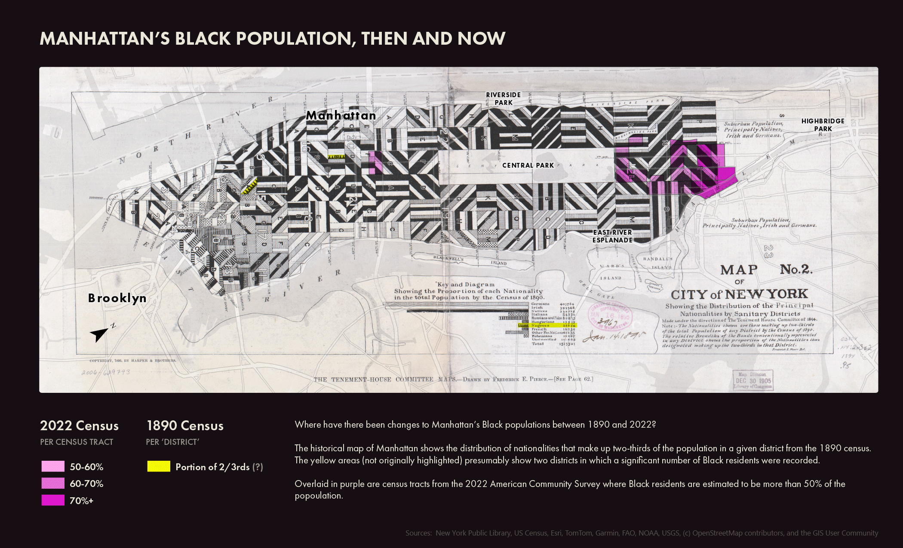
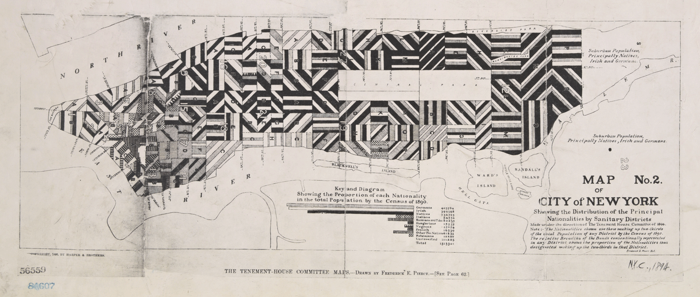

Georeferencing a historical race map of Manhattan
ArcGIS
R
NYPL
US Census
Interpretations of nationality data from more than 100 years ago.

Manhattan's Black population, then and now.
From the NYPL collection,
Map No. 2 of the Tenement-House Committee
is a specimen from 1895, a striking map design that describes the proportions of nationalities across Manhattan districts. It is part of a series of six maps showing population data from the 1890 census.
It's a puzzling description and rendering that gets more confusing the more you dig into it
.
How is this map supposed to be interpreted, and is it even possible to compare it with census data more than 100 years later?

The original map was apparently made in colour, but a black and white version was created for printing.
Decoding the graphics
It's unclear what the exact values of each stripe are meant to be, and whether their width is meant to be proportional within each district in some way. The legend indicates that these are "principal" proportions (two-thirds of the population), and the nationality classifications raise questions about the racial prejudices of that time.
For example, Black people are encoded separately from Natives (i.e. American-born) as though they are mutually exclusive. This being the Jim Crow era, I wonder how many could actually have been encoded as native-born as well.
Black populations (of some ambiguous but significant size) are charted on this map in only two districts, both in the downtown area. I was curious to compare this with present-day population data to see the differences. NYC neighbourhoods are still segregated enough today to see on a map.
Methods
I georeferenced the 1895 map in ArcGIS using Central Park as the main guide. Some of the street names were labelled which was helpful, but there are some differences in scale that I wasn't able to match completely.
I used R to pull population, nativity, citizenship, and race data from the US census (ACS 2022 at the census tract level, the closest aggregation level to the district on the 1895 map). I adjusted the symbology to show only census tracts where the proportion of Black residents was 50% of greater. The 2022 census data included Randalls and Wards Islands as part of Manhattan, but I chose to exclude them from the analysis since they weren't part of the 1895 map.
The final map
Although the census tracts and districts don't line up at all, this didn't matter because Manhattan's Black populations are in completely different places today.
Overlaying today's census data (purple) and comparing it to 1890 (yellow), it appears that there are no longer any significant clusters of Black residents downtown. Instead, the larger proportions of Black residents are concentrated mostly in Harlem.
I wonder how and when these changes occurred, and how quickly. It would be interesting to map census data by year, keeping in mind the collection biases at play throughout the years.